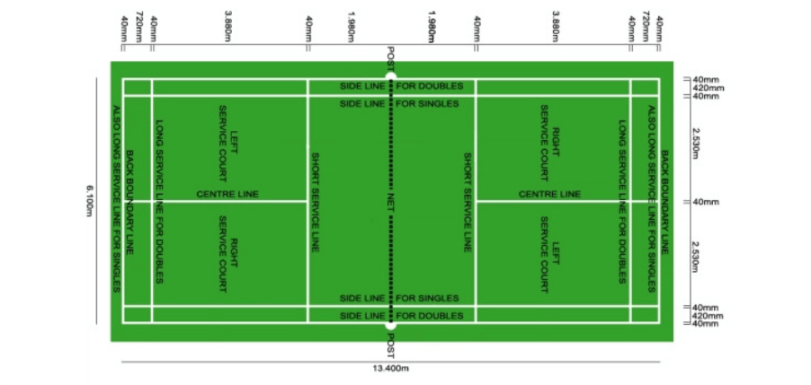
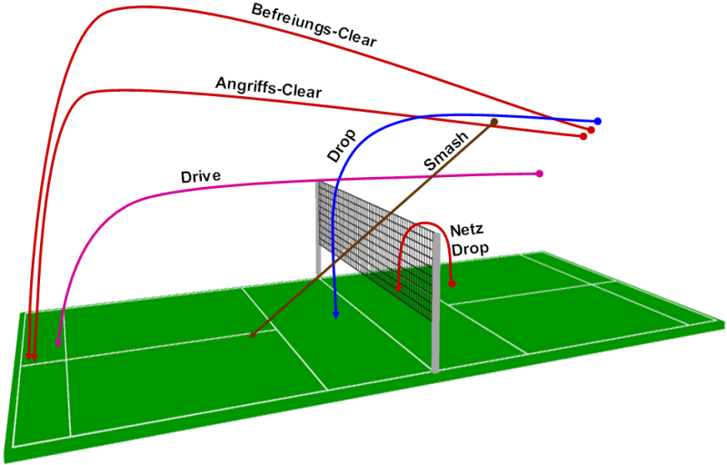

Certainly! Badminton is a racquet sport that originated in the mid-19th century in British India. It was first played by British military officers stationed there, who developed the game as a leisure activity.
The game was originally called "Poona" after the city in India where it was first played, and it quickly became popular among British officers stationed in the country. The game was later introduced to England in the late 1800s, where it was played mostly by the upper classes as a garden party game.
In 1893, the Badminton Association of England was formed to standardize the rules and promote the game. The first All England Open Badminton Championships were held in 1899, and the game's popularity continued to grow throughout the 20th century.
Badminton became an Olympic sport in 1992, and today it is played at both amateur and professional levels around the world. The game has evolved over time, with changes to the rules and equipment to improve safety and enhance playability.
Court |
|
| Badminton courts are rectangular and divided into halves by a net. Both singles and doubles courts are marked, and the doubles court is wider than the singles court, but both are of the same length. The full width of the court is 6.1 metres (20 feet), and in singles, this width is reduced to 5.18 metres (17.0 feet). The full length of the court is 13.4 metres (44 feet). The net is 1.55 metres (5 feet 1 inch) high at the edges and 1.524 metres (5.00 feet) high in the centre. The net posts are placed over the doubles sidelines, even when singles is played. The minimum height for the ceiling above the court is not mentioned in the Laws of Badminton.. | |
|  | |
Serving |
|
| In badminton, the server must hit the shuttlecock over the short service line on the opponents' court or it will be counted as a fault. The server and receiver must remain within their service courts and not touch the boundary lines until the server hits the shuttlecock. At the start of the rally, the server and receiver stand in diagonally opposite service courts. In singles, the server stands in their right service court when their score is even, and in their left service court when their score is odd. In doubles, the same player continues to serve if the serving side wins a rally but changes service courts to serve to a different opponent each time. | |
Scoring |
|
| Badminton games are played to 21 points, and a player or pair must win two games to win the match. If the score is tied at 20-20, the game continues until one side gains a two-point lead, except in the case of a tie at 29-29, where the game goes to a golden point of 30. The winner of the previous game serves first in subsequent games. At the start of a match, a shuttlecock is cast or a coin is tossed to decide who serves first, and in subsequent games, the winners of the previous game serve first. In doubles, the serving and receiving pairs may decide who serves and receives for the first rally, and players change ends at the start of the second game and when the leading player or pair's score reaches 11 points in the third game. | |
Tips: |
|
|  | |
| Improve your footwork: Having good footwork is essential in badminton as it allows you to move around the court quickly and efficiently. Practice footwork drills to improve your speed, agility, and balance. Master your serve: The serve is an important part of the game and can often set the tone for the rally. Practice different types of serves such as low, high, short, and flick serves, to keep your opponent guessing. Use deception: Use deceptive shots such as feints, flicks, and disguised shots to keep your opponent off balance and create opportunities to score points. Play to your strengths: Identify your strengths and play to them. If you have a strong smash, use it to your advantage. If you have good net play, try to dominate the front of the court. Anticipate your opponent's shots: Try to read your opponent's shots by watching their body language and racket movements. This can help you anticipate where the shuttlecock is going and get into position to make a successful return. Stay calm under pressure: Badminton can be a fast-paced and intense game, but it's important to stay calm and focused under pressure. Take deep breaths, stay relaxed, and trust your training | |
Strategies: |
|
| Keep your opponent moving: Make your opponent move around the court as much as possible. Use a variety of shots to keep them guessing and force them to cover more ground. Play to your strengths: Identify your strengths and use them to your advantage. If you have a strong smash, use it to create opportunities. If you have good net play, try to dominate the front of the court. Use deception: Use deceptive shots such as feints, flicks, and disguised shots to keep your opponent off balance and create opportunities to score points. Control the front of the court: Try to dominate the front of the court by using drop shots and net shots. This can force your opponent to play defensive shots and give you the opportunity to attack. Stay patient: Don't rush your shots or try to force a point. Stay patient and wait for the right opportunity to attack. Vary your pace: Use a mix of fast and slow shots to keep your opponent guessing and create openings in their defense. Stay focused: Stay focused on the game and avoid getting distracted by the score or the crowd. Maintain a positive attitude and stay in the moment. | |